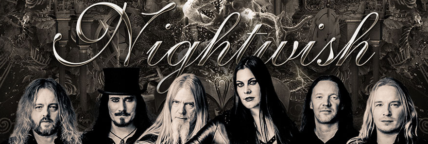

Home
Galería
Discografía
Tours
Contacto
Angels Fall First (1997)
Oceanborn (1998)
Wishmaster (2000)
Century Child (2002)
Once (2004)
Dark Passion Play (2007)
Imaginaerum (2011)
Endless Form Most Beautiful (2015)
Human. :II: Nature. (2020)